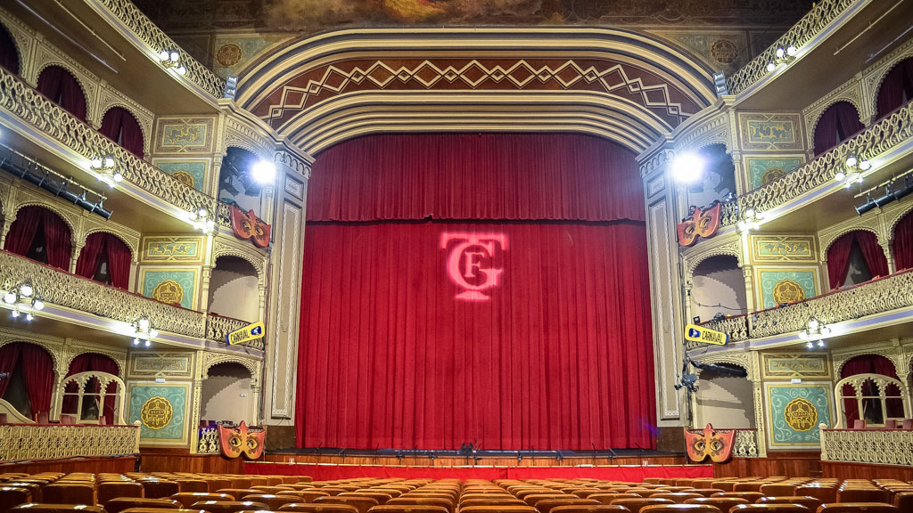

COAC
COAC o mejor dicho Concurso Oficial de Agrupaciones de Carnaval es el concurso que transcurre durante los meses de enero, febrero y marzo (todo depende de la fecha en la que caiga el carnaval) en el que participan numerosas agrupaciones las cuales están divididas en 4 modalidades diferentes y en las que a su vez se cantan muchísimas letras que junto a la musicalidad que llevan acompañandolas demuestran el ingenio y el arte que tienen todos los autores que escriben para este maravilloso mundo de los papelillos de colores. Como bien es conocido, el concurso se celebra de manera íntegra en el Gran Teatro Falla convirtiendose así en el templo de las coplas sagradas de Cádiz, más bien conocido como el templo de los ladrillitos coloraos Modalidades
Coros
Dentro del concurso tenemos 4 modalidades diferentes, para empezar, tenemos que hablar de las agrupaciones más antiguas aunque posiblemente sea por los aficionados más alejados a la ciudad la modalidad que menos repercusión tiene, hablamos de los coros Los coros están compuestos por grupos de entre 30 y 45 persona aproximadamente, son sin ninguna duda las agrupaciones más numerosas del carnaval de Cádiz, cabe mencionar que también sus componentes llevan instrumentos como guitarras, bandurrias y laudes. Sus voces se dividen en tenor, segundas y bajos La estructura que sigue sus repertorios son:1 presentación
2 tangos
2 cuplés
1 popurrí
Chirigotas
Las chirigotas son sin duda las agrupaciones más famosas del mundo del carnaval, esto es debido a que su obejtivo es hacer reír a los aficionados a base de hacer sátiras sobre la sociedad Están compuestas por grupos de entre 12 y 15 personas como máximo, los instrumentos que llevan suelen ser entre 2 y 3 guitarras y una caja que va acompañada con un bombo que sirve para marcar el ritmo de la agrupación La estructura que sigue sus repertorios son:1 presentación
2 pasodobles
2 cuplés
1 popurrí
Comparsas
Las comparsas son las agrupaciones que más pasiones desatan dentro del mundo del carnaval, esto es debido a que su obejtivo es intentar aflorar los sentimientos de los aficionados a base de letras profundas Están compuestas por grupos de entre 12 y 15 personas como máximo, los instrumentos que llevan suelen ser entre 2 y 3 guitarras y una caja que va acompañada con un bombo que sirve para marcar el ritmo de la agrupación, su composición es básicamente igual que en la modalidad de chirigotas La estructura que sigue sus repertorios son:1 presentación
2 pasodobles
2 cuplés
1 popurrí
Cuartetos
Los cuartetos pueden ser quizás las agrupaciones más infravaloradas por los aficionados durante estos últimos años debido a la gran dificultad que estos tienen, su principal objetivo es hacer reír al aficionado durante todo su repertorio Están compuestos por grupos de entre 3 y 5 personas como máximo, y suelen usar una guitara y unas claves para acompañar a los componentes durante los cuplés La estructura que sigue sus repertorios son:1 parodia
2 cuplés
1 popurrí